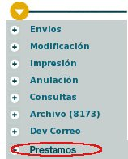
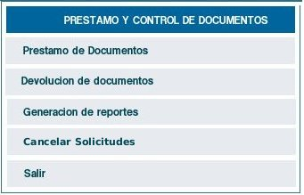

3.1.1.1.
El usuario debe tener el permiso asignado en la tabla de usuario
correspondiente al campo: USUA_ADMIN=1
3.1.1.2. El actor debe haber ingresado al sistema
3.1.1.3. Deben existir solicitudes por parte de los usuarios para
préstamo de documentos
1.
A:
INICIO -
ingresa al módulo de préstamo de documentos en la lista
de permisos especiales del sistema

2. S: Despliega el menú principal del módulo de
préstamos:

3. A: Selecciona Cancelar Solicitudes
4. S: Despliega la ventana para seleccionar la fecha y hora inicial
desde donde se van a cancelar las solicitudes de documentos y no se han
prestado. La fecha inicial, debe ser tres (3) días antes de la
fecha del dia.
5. A: Selecciona la fecha o deja la que presenta el sistema y
selecciona el botón "Vista Preliminar"
6. S: Despliega el resultado de la búsqueda con los radicados a
los cuales se les cancelará el pedido.
Lista de los radicados que serán cancelados con:
Número de expediente: Si se
encuentra asociado a algún expediente
Nombre de usuario: Del usuario que
solicita el préstamo
Dependencia Usuario: A la cual pertenece el usuario que solicita
Fecha de pedido: Fecha en que se solicitó el documento
Requerimiento: si se solicita el documento o el anexo.
Un botón: "Confirmar"
7. A: Selecciona el botón confirmar
8. S: Realiza la siguiente confirmación:
3.1.2.1 Se debe guardar el registro
histórico de la cancelación de solicitud de
préstamo.